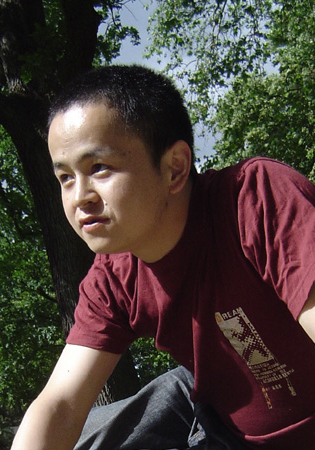
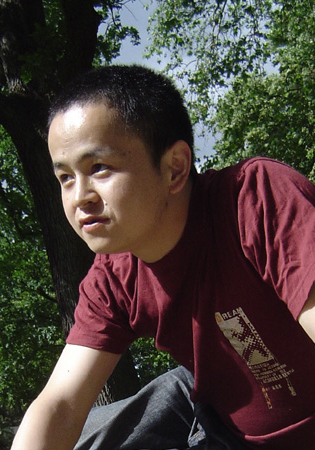

| 陈 峥 | 硕士工程师 德国黑森州注册建筑师 |
| 硕士工程师 | 德国黑森州建筑师协会注册建筑师（注册号：18996） |
| 1994-1999 | 于华中理工大学（湖北武汉）建筑学系，获工学学士和建筑学专业学士学位 |
| 1999-2000 | 于深圳左肖思建筑师事务所任建筑师 |
| 2000-2002 | 于深圳合伙经营建筑设计工作室 |
| 2003 | 于德国慕尼黑进修德语。 |
| 2003-2006 | 于德国凯撒斯劳滕大学建筑系获德国传统Diplom硕士学位，毕业时获德国 DAAD教育奖学金 |
| 2005-2007 | 于德国凯撒斯劳滕大学教授Dr. Prof. Wolfgang Boehm主持的B+P事务所兼职 |
| 2007-2008 | 于德国法兰克福施耐德+舒马赫建筑师事务所（schneider+schumacher Architektengesellschaft）任建筑师 |
| 2008-2010 | 于德国法兰克福克利斯朵夫.梅克勒教授建筑师事务所（Prof. Christoph Maeckler Architekten）任建筑师 |
| 2010 | 于德国法兰克福正式注册成立陈峥建筑师事务所（CHZH Architektur & Design Buero in Frankfurt am Main） |
| 2017 | 于德国巴登宏堡建立德国CXP建筑师事务所（CHZH+XQ ARCHITEKTEN & DESIGNER GBR） |
 
